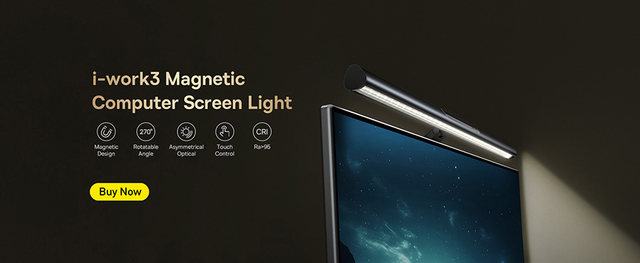 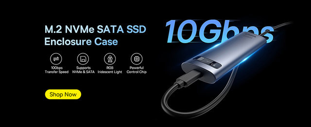 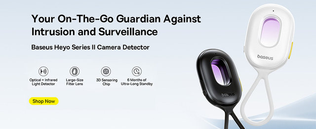
-----------------------------------------------------
① Ergonomic Design
② Bluetooth 5.2 & 2.4G Wireless
③ Customized Shortcut Function
④ 4000DPI High Sensitivity
⑤ 7 Mute Buttons
⑥ LED Power Indicator
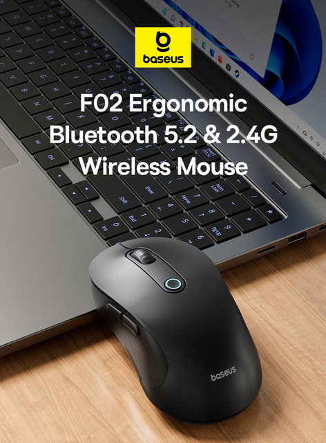
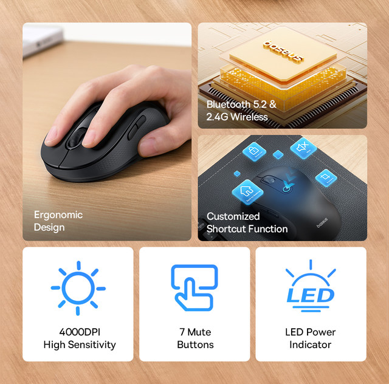
Support Bluetooth 5.2 & 2.4G wireless dual mode.
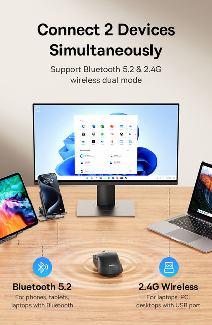
Better resistance to electromagnetic interference, improved stability with ultra-low latency for smooth to use.
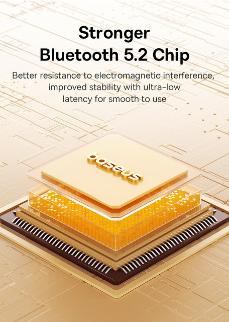
Five adjustable DPI levels, one-click easily switch
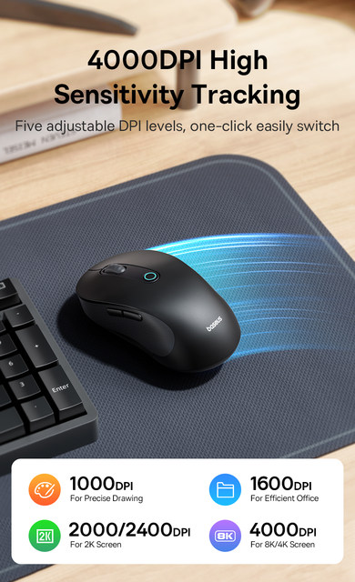
Perfectly fits the curvature of the palm, so you won't feel sore after long-time use.
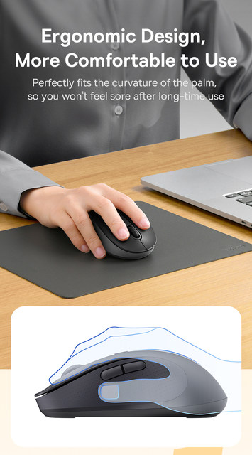
• Scroll wheel
• Left button / Right button
• Forward button / Back button
• Customized shortcut button: back to desktop/screen lock/mute/screenshot
• ON/OFF button / Mode switch button
• DPI adjustment button / Bluetooth pairing button
• USB receiver
• Battery compartment
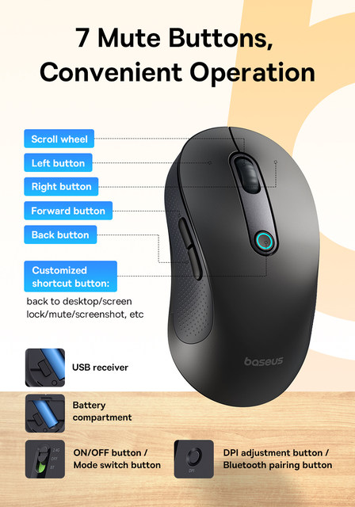
No clicking sound, help you focus on work and not disturb others.
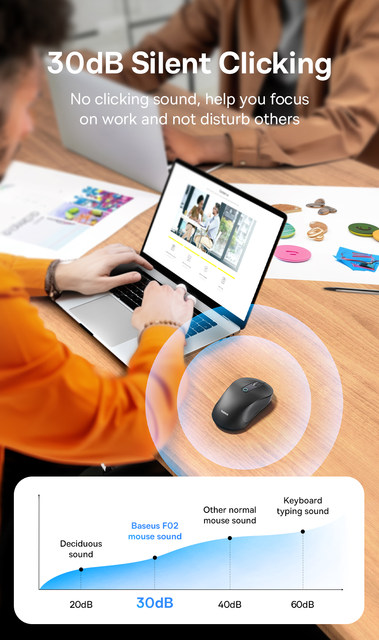
Connect to the Baseus APP can customize your own shortcut function for work more efficient.
Shortcut Function: back to desktop, screen lock, mute, screenshot.(Note: Download the Baseus APP and link the mouse to it to set up, the default setting is "Back to Desktop")
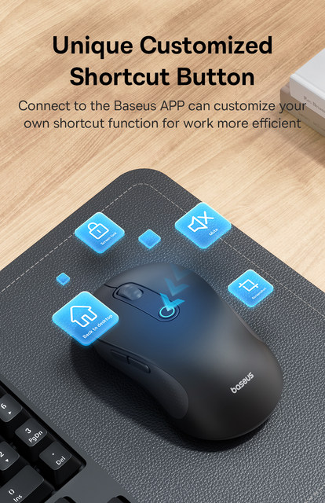
Low battery automatic alert to avoid the embarrassment of suddenly running out of battery at work.
① Lights up blue: Battery level >10%.
② Lights up red: Battery level ≤10%.
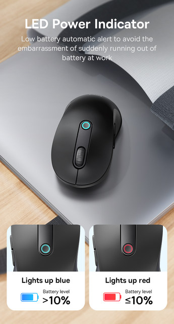
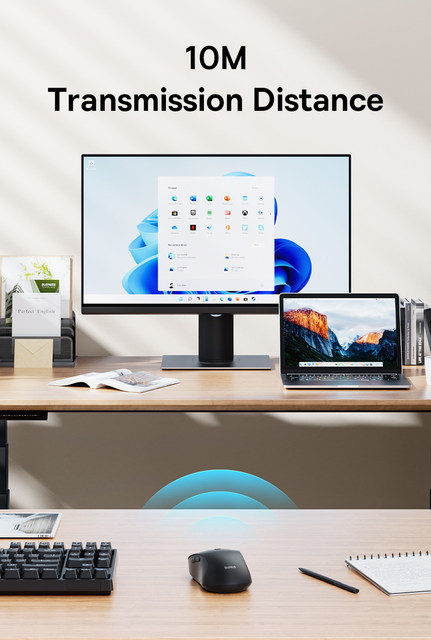
Automatically sleep when you're not using it to extend the battery life.
(Note: Click or move the mouse to wake it up)
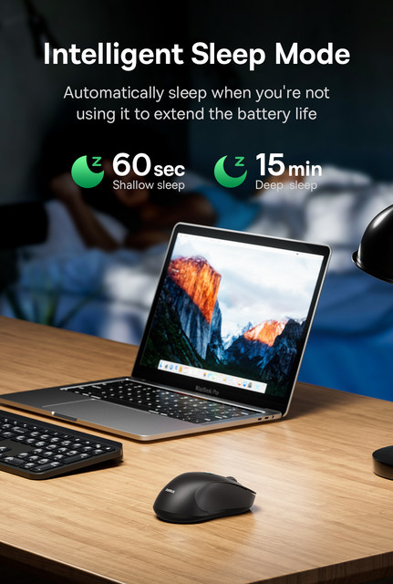
③ Skin-Friendly Wrist Rest
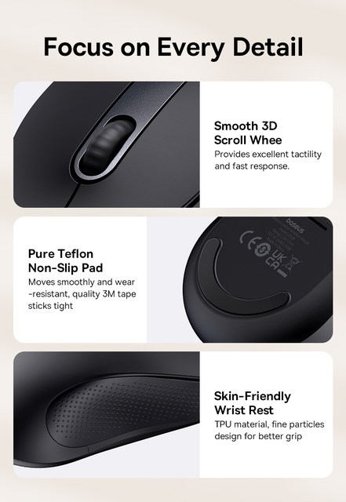
Applicable to a variety of systems, no need to install the driver, simple operation.
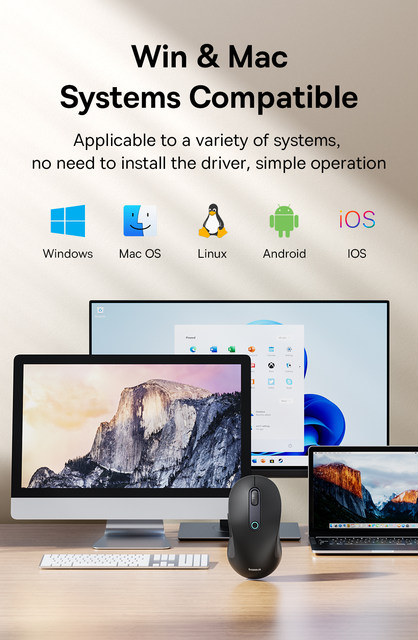
(Note: The battery is not included in the package)
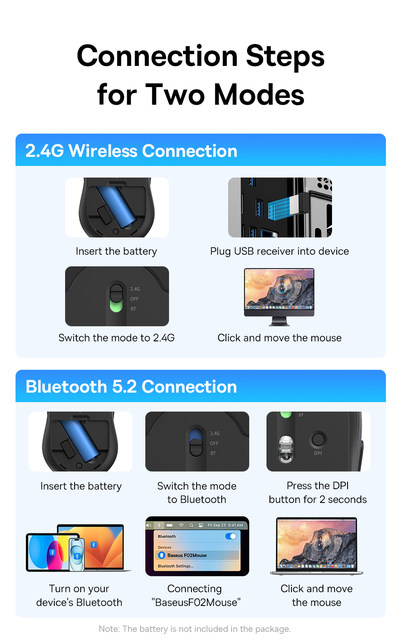
• Name: Baseus FO2 Ergonomic Wireless Mouse
• Model No: BS-FO2
• Material: PC+ABS
• Color: Baby Pink, Moon White, Cluster Black
• Weight: About 90g (without battery)
• Transfer Distance: About 10m
• Connection Type: 2.4GHz wireless+Bluetooth
• Bluetooth Version: Bluetooth 5.2
• Sensitivity: 1000, 1600, 2000, 2400, 4000DPI
• Response Frequency: 250Hz
• Operating Systems: Windows, Harmony OS, Apple OS, Linux, Vista, etc.
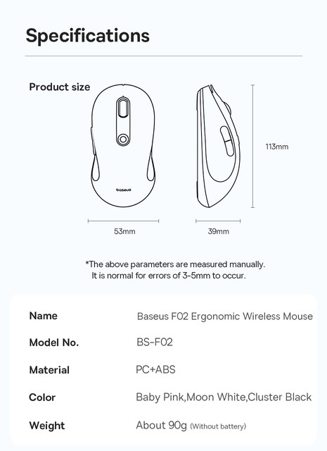
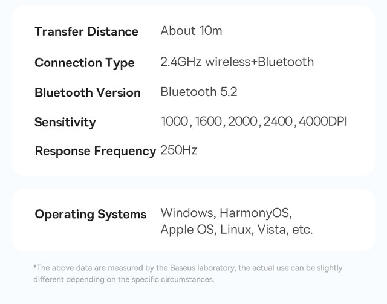
F02 Mouse *1, USB Receiver *1
(Note: The battery is not included in the package)
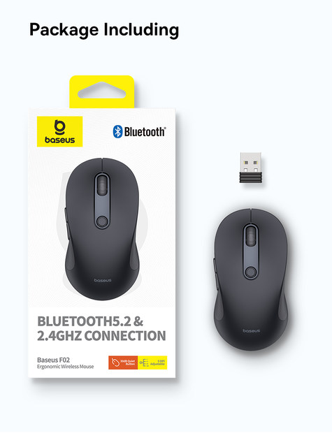
Easy Navigation with Comfortable Grip
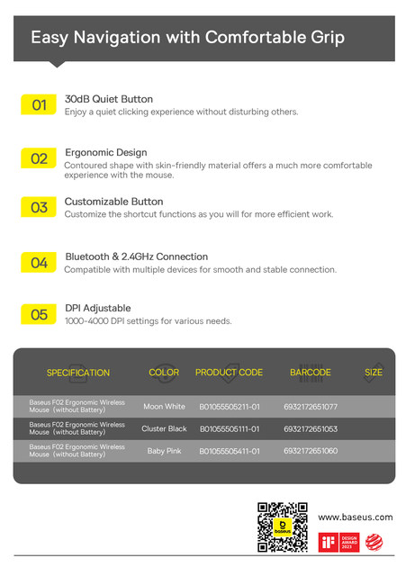